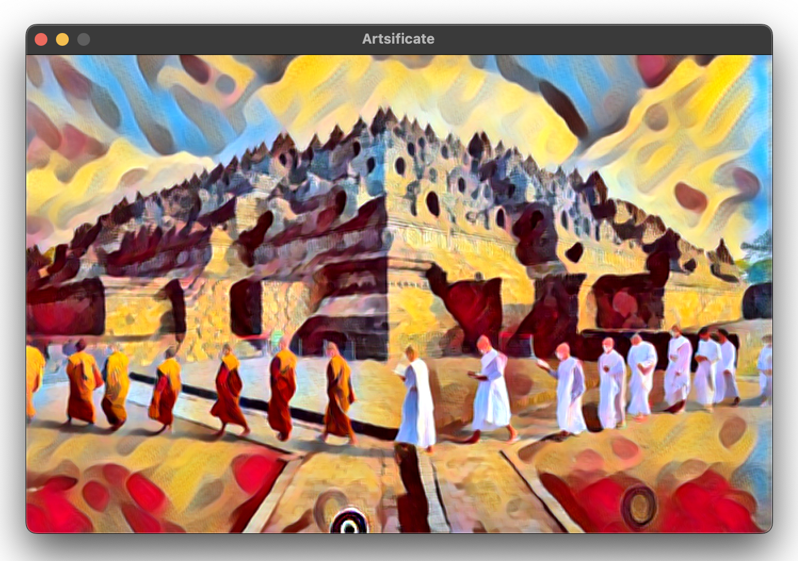
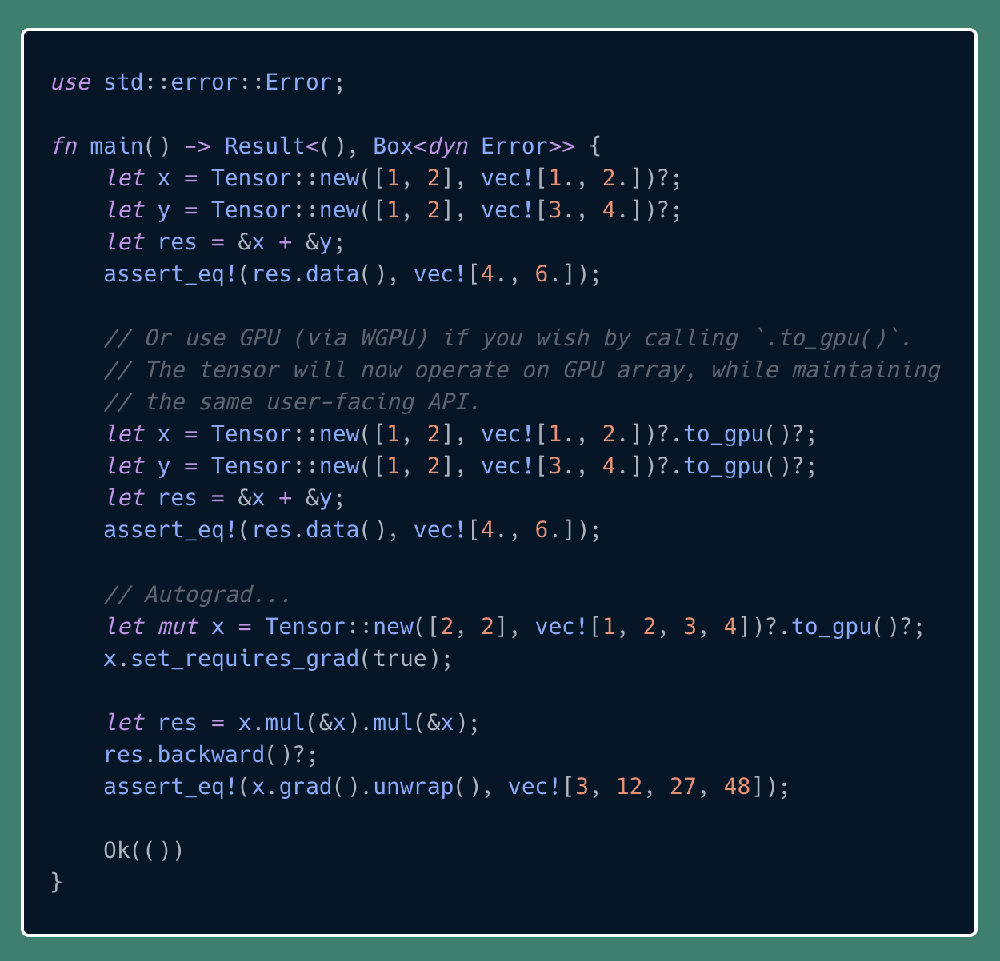

A single-header file only library, minimalist tensor library in pure C from scratch with no dependency other than C standard libs. Optionally it can be linked with BLAS, OpenMP, and NEON for further acceleration. With the help of model export/importer, it can run a few of neural net models, such as ResNet, style transfer, and YOLOv7.

A single and small executable app for neural style transfer, built with Mint and Raylib
Arnab aims to provide simple yet portable solutions to organize and to execute data models. This is inspired by DBT but is with subset of DBT features, jinja-less (except the macros), theoretically more portable.
Its main purpose is simple: give it a directory with SQL files, it can scan the directory recursively, and then determine the execution order of all queries. The execution backend is the blazingly fast™ DuckDB.
Arnab demo for simple data transformation pipeline
Experimental WGPU-accelerated ndarray written in rust. Tensoria offers as easy API as possible. It provides automatic gradient computation or autograd. It also allows creation of tensors with arbitrary dimensions at runtime with ergonomic API.

Tensoria example
Please check my github to see more of my public projects.
■────────────────────────────────────────────────────────────────────■ │ │ │ Copyright 2014-2024 Aria Ghora Prabono. Any and all opinions │ │ listed here are personal unless stated otherwise. │ │ │ ■────────────────────────────────────────────────────────────────────■